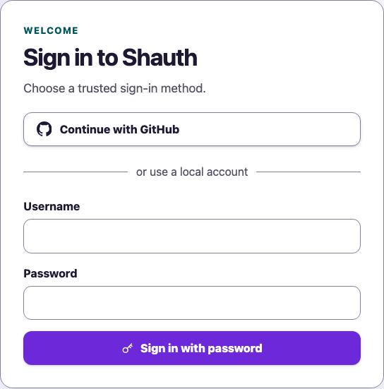

Identity for your applications
One sign-in.
Every app.
One sign-out.
Give your applications a shared front door. Shauth brings sign-in, access, and sessions together through standard OpenID Connect.
OpenID Connect Ory Hydra PostgreSQL

A capture of the real interface, not a sign-in form. No account is needed to explore this tour.
The session lifecycle
Connected at sign-in.
Connected at sign-out.
Each application owns its experience. Shauth connects their identity and session lifecycles.
- Sign in
Start where you work.
Open an application directly, or choose it from Shauth’s app catalog. Shauth handles authentication and returns you to that application.
Read about sign-in - Single sign-on
Take your identity with you.
Open another registered app using the same Shauth browser session. Each app receives tokens for its own OpenID Connect client.
See the OIDC contract - Global logout
Leave every session behind.
Sign out from a connected app. Shauth ends the shared session, propagates logout, and returns you to that app’s registered signed-out page.
Read about global logout
For the people running it
Access you can see.
Sessions you can end.
The administration interface brings the work of running identity into one place.
Explore the administration API- People & access
- Manage local accounts, invitations, roles, and GitHub access rules.
- Browser sessions
- Inspect active sessions and revoke access across connected applications.
- Application catalog
- Register app endpoints and inspect browser checks for both direct and catalog entry.
- Operational evidence
- Read dependency health, application observations, service logs, and the audit record.
A standard integration
Your app speaks OIDC.
Shauth handles the identity providers.
Applications integrate with one issuer. GitHub and optional Microsoft Entra ID stay behind Shauth’s identity boundary.
/.well-known/openid-configurationAuthorization code flow, confidential clients, exact issuer and audience checks, and PKCE where applicable.
Read the integration guideExplore the project
Make one sign-in work everywhere.
Read the source, run the complete stack, or connect your first application.